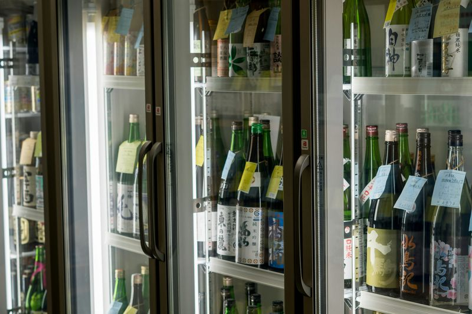
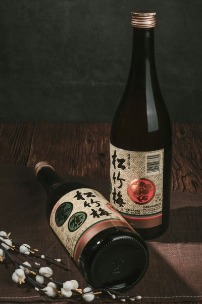
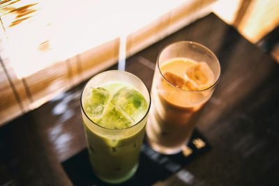
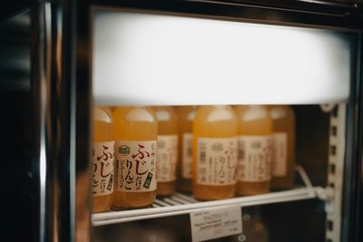

Sake Japonés
Bebida alcohólica tradicional japonesa, suave y aromática.
Descripción
Ofrecemos una selección de bebidas típicas japonesas como sake, té verde y refrescos japoneses.
Perfectas para acompañar cualquier plato y mejorar la experiencia gastronómica.
Galería

Sake Japonés

Té Verde

Refresco Japonés